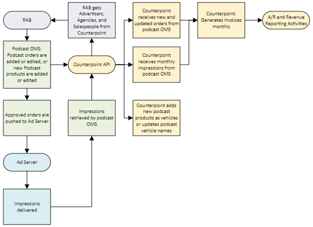

Boostr Integration
With version 8.1, Counterpoint has added support for an integration with Boostr OMS. The Boostr OMS integration consists of the following features:
- Retrieval of advertisers, agencies, and salespeople from Counterpoint by a CRM provider (RAB) via the Counterpoint API
- Posting of podcast products from Boostr to Counterpoint via the Counterpoint API, where they are added as new vehicles or for updating existing vehicle names
- Posting of new and revised podcast/digital orders from Boostr to Counterpoint via the Counterpoint API
- Posting of impressions achieved for the month at the end of the month from Boostr to Counterpoint via the Counterpoint API
Integration Overview
This flowchart shows the basic workflow of this integration.

Description
RAB uses the Counterpoint API to retrieve advertisers, agencies, and salespeople from Counterpoint, and integrates with Boostr.
When a new digital product is added to Boostr, it gets pushed to Counterpoint using the Counterpoint API and added as a new Counterpoint vehicle. Product name changes made in Boostr are also pushed to Counterpoint.
When a podcast campaign is approved in Boostr, it is pushed to Counterpoint using the Counterpoint API and added as a new Counterpoint contract. At that time, the Counterpoint contract number will be assigned to the campaign so that it can be stored with the Boostr campaign.
When a change is made to an approved campaign in Boostr and the campaign is saved, it is pushed to Counterpoint using the Counterpoint API so that the Counterpoint contract can be updated with the latest changes.
Podcast contracts that have been added or updated will initially appear as unscheduled Orders in the Counterpoint Traffic System, at which point they can be scheduled like any manually entered contract. (The automated contract schedule program can be kept running in the background to automatically schedule these contracts.) Podcast contracts that have been added in this manner will be viewable on the Counterpoint Traffic System Proposal/Order screen, and can be printed using the Proposals/Contracts report, which includes a section to display ordered impressions, line start and end dates, and other information specific to impression-based buy lines. Podcast contracts received from Boostr will not be editable in Counterpoint. If a change must be made to a contract that originated in Boostr, it must be edited in Boostr first, then pushed to Counterpoint using the Counterpoint API.
At the end of the month, the impressions delivered by the ad server for the month for any Boostr line items are pushed to Counterpoint using the Counterpoint API. Once the monthly impressions have been received from Boostr, Counterpoint invoices can be run.
Counterpoint API
Get Agencies, Advertisers, and Salespeople
As part of this integration, the Counterpoint API can be used to retrieve active agencies, active advertisers, and active salespeople.
Get Agencies: for each active agency record, it will return:
- Agency name
- Agency ID: the ID number assigned to the agency within Counterpoint. This number doesn’t change even if the agency name changes
- Agency CRM ID: the ID number assigned to the agency by RAB
- Agency credit status (requires checking, approved, or denied)
Get Advertisers: for each active advertiser record, it will return:
- Advertiser name
- Advertiser ID: the ID number assigned to the advertiser within Counterpoint. This number doesn’t change even if the advertiser name changed
- Advertiser CRM ID: the ID number assigned to the advertiser by RAB
- Direct advertiser flag (a direct advertiser has no agency, and if this value is set to Yes, it will indicate it is a direct advertiser that does not use an agency)
- Advertiser credit status (requires checking, approved, or denied)
Get Salespeople: for each active salesperson record, it will return:
- Salesperson ID: this is a static ID number that doesn’t change even if the salesperson first or last name changes
- Salesperson last name
- Salesperson first name
Post Vehicle
When a new podcast product gets added to Boostr, the new product name and Boostr-assigned product ID get pushed to Counterpoint using the Counterpoint API and added as a new Counterpoint vehicle. The following values will be set in Counterpoint when a new vehicle gets added using this process:
- Vehicle name (using the Boostr product name)
- Boostr product ID (using a unique, static product ID defined by Boostr)
- Vehicle type: will be set to “conventional”
- Status: will be set to “active”
- Medium: will be set to “podcast/ad server” (a setting used to indicate the vehicle allows lines that store impressions)
- Ad server vendor: will be set to “Boostr” to indicate the contract source
- Participant split definition: a new participant split definition will be defined starting from the start of the current invoice period using hard-coded values.
Before a new vehicle will be fully usable in Counterpoint, a user will need to manually enter the rate card items for any current and future rate cards that it needs to be included on. Note that line items will be rejected if they reference an ad location (daypart name) that is not defined in the system. There are other settings that may also need to be manually updated, such as the vehicle group values used with revenue reporting. Programming libraries will not need to be created if there will be no spot lines for this newly added vehicle.
During the process of pushing a new product to Counterpoint, if a new Boostr product name exactly matches an existing Counterpoint vehicle name, it will be rejected, as duplicate vehicle names are not allowed. If the max vehicle name length is exceeded, and the incoming name exceeds the max, then the name will be truncated when added.
If a product name is changed in Boostr, during saving, the new product name will be posted to Counterpoint using the Boostr product ID as the static ID.
A Get Vehicle method also exists to get vehicle information, including the vehicle name, external product ID, ad server vendor ID, medium, and vehicle type.
Add and Update Contracts
When a podcast campaign in Boostr is approved as an order, or when an approved order is changed, at the point of saving, the Counterpoint API will need to be used to post the campaign header and all line information to Counterpoint.
For new campaigns, the process will involve sending a header record that includes campaign level values such as the advertiser, agency, and Boostr contract number, along with line item records for each line item on the campaign. When a new contract is successfully added using this method, the Counterpoint contract number will be returned to Boostr to link the two contract numbers together. Added contracts will require scheduling in Counterpoint, which is necessary for maintaining a history of contract revisions.
For revised campaigns, the full header and line information must be sent to Counterpoint using the API to update the corresponding contract in Counterpoint. Counterpoint will use the Boostr contract number to match the revised contract to the existing Counterpoint contract. The revised contract will require scheduling in Counterpoint in order to maintain a history of contract revisions.
The contract header fields are as follows:
- External system contract number: a unique identifying number assigned to a campaign by the external system. It will be stored in Counterpoint with the new contract and used to link the Boostr campaign with the corresponding Counterpoint contract number. It will also be displayed on the contract report and invoice. (Mandatory.)
- Advertiser ID: the Counterpoint assigned advertiser ID number. (Mandatory.)
- Product name: the name of the product being advertised for this campaign. Note that this “product” is different from the podcast name, which may be referred to as a “product” in Boostr, but is called a “vehicle” in Counterpoint. (Non-mandatory.)
- Agency ID: the Counterpoint-assigned agency ID number. If the advertiser is a direct advertiser, then the Agency ID should not be specified. (Mandatory field except when it’s a direct advertiser.)
- Agency buyer: the first and last name of the buyer at the agency associated with this campaign. (Non-mandatory.)
- Primary salesperson first name: the first name of the primary salesperson. The primary salesperson first and last name will be compared against existing salesperson records and stored with the contract header in Counterpoint when a match is found. If the process cannot find an exact match, the record will be rejected. (Mandatory.)
- Primary salesperson last name: the last name of the primary salesperson. The primary salesperson first and last name will be compared against existing salesperson records and stored with the contract header in Counterpoint when a match is found. If the process cannot find an exact match, the record will be rejected. (Mandatory.)
- Primary salesperson split: the split percentage defined for the primary salesperson. This value and the Secondary salesperson split must equal 100 between the two of them. If there’s no secondary salesperson defined, or the secondary salesperson split is 0, then the primary salesperson split must be 100. (Mandatory.)
- Secondary salesperson first name: the first name of the secondary salesperson. The secondary salesperson first and last name will be compared against existing salesperson records and stored with the contract header in Counterpoint when a match is found. If the process cannot find an exact match, the record will be rejected. (Mandatory if there is a secondary salesperson, otherwise non-mandatory.)
- Secondary salesperson last name: the first name of the secondary salesperson. The secondary salesperson first and last name will be compared against existing salesperson records and stored with the contract header in Counterpoint when a match is found. If the process cannot find an exact match, the record will be rejected. (Mandatory if there is a secondary salesperson, otherwise non-mandatory.)
- Secondary salesperson split: if a secondary salesperson is defined, then this value must be defined. It must add up to 100 between the primary and secondary split. (Mandatory if there is a secondary salesperson.)
- Competitive code 1: the name of the product protection code used to help separate like products from each other. If the name doesn’t exist, it will be added. (Mandatory.)
- Competitive code 2: the second product protection code. (Non-mandatory.)
- Revenue Set 1: the three possible options are for group 1 are: “add to schedule”, “scatter”, and “upfront”. (Mandatory.)
- Revenue Set 2: the two possible options for group 2 are: “new advertiser” and “return advertiser”. (Mandatory.)
- Revenue Set 3: the three possible options for group 3 are: “branding”, “direct response”, and “remnant”. (Mandatory.)
- Billing cycle: used to indicate whether the contract should be on the calendar billing cycle, or the standard broadcast billing cycle (Mandatory.)
- Contract comments: field for custom contract header comments. These comments will be used for copy instructions and will be set to be displayed on invoices so that when defined, copy instruction information will appear on the standard invoice form. (Non-mandatory.)
For each line record, the fields are:
- External system contract number: the unique identifying number assigned to the campaign by the external system for the campaign that this line is part of. (Mandatory.)
- External system line number: the line item number assigned to the line item by Boostr. Counterpoint will retain this number with the corresponding line item in Counterpoint and use it to link the external line number with the internal line ID. (Mandatory.)
- Vehicle name: the podcast or package name that this line is for. (Mandatory.)
- Start date: the start date of the line item. (Mandatory.)
- End date: the end date of the line item. If this is a package line, the start and end date must encompass the individual hidden lines that make up that package. (Mandatory.)
- Ad location: the ad location name (such as pre-roll, mid-roll, post-roll). (Mandatory.)
- Price Type: the line price type, which can be Flat Rate or CPM. Baked-in spots will have a Flat Rate price type, and be distinguished from DAI Flat Rate lines using the “Ad Delivery Type” field. (Mandatory.)
- Ad Delivery Type: the two values are “DAI” or “Baked-in”. The “Baked-in” option will be used with the “Flat Rate” price type value to determine when a line is a “Baked-in” spot line. (Mandatory.)
- Position: the position number used by the ad server. (Optional.)
- Priority: the priority number used by the ad server. (Optional.)
- Targeting: if there are any special geographic, episode, or other special targeting rules for this line item, it must be displayed in a text description. The targeting description text will be saved with the line similar to a line comment, and displayed on the invoice. (Non-mandatory.)
- Impression goal: the number of ordered impressions for the line. (Mandatory.)
- Impression cap: the amount of impressions the ad server is not to exceed. (Non-mandatory.)
- CPM: the Cost per Thousand for CPM price type lines. (Mandatory for CPM price type lines.)
- Impression line total cost: for flat rate lines, the total ordered cost of the line item. For DAI Flat Rate lines, the total line cost will be divided by the number of months that the line is running for to determine the monthly invoice amount for that line. For Baked-in Flat Rate lines, the total line cost will equal the Baked-in spot cost. (Mandatory for Flat Rate price type lines.)
- Impression source: can be set to “first party” or “third party”. This will be stored with the line for use with a future enhancement. (Mandatory.)
- Line Comment: can be used to store comment text for the line, which may be used in the future. (Non-mandatory.)
Validation will be performed on new and changed records with the following cases triggering a rejection of the incoming campaign:
- If any mandatory value is blank or has an invalid value, such as an agency ID that doesn’t exist.
- If it’s a non-direct advertiser with no agency defined.
- If there are flat rate price type lines being included in a package.
- If the billing cycle has changed after a contract has been invoiced at least once.
- When a line that has already been invoiced has been changed in an invalid way, such as the start date being moved to the future or the line being fully terminated after it has been invoiced.
- If the primary salesperson first and last name cannot be matched to an existing salesperson record.
- If there’s a secondary salesperson first and last name defined and it cannot be matched to an existing salesperson record.
- If the primary and secondary salesperson split does not add up to 100%.
- If the length of a contract from the earliest start date to the latest end date exceeds two years.
Modifying the Impression Goal After Invoicing
The digital API allows the impression goal to be modified after a line has been invoiced for at least one month if it’s still active (in other words, if the line end date is after the last invoice date), and for CPM price type lines, if the new impression goal when multiplied by the CPM (then divided by 1,000) to calculate the line cost is equal or greater than the total amount that has been invoiced so far for the line.
For Flat Rate lines, because they bill based on a fixed line cost, the impression goal is irrelevant and can now be changed after invoicing to any value as long as the line’s end date is greater than the last invoice date.
Rejection notification example: "Impression Goal cannot make the line total less than what has been billed. ExternalLineId: 1 ImpressionGoal: 40000 Line Total: 800 Billed: 1000.00"
Impression goals can also be increased to any value on active lines.
For example: there’s a CPM price type line that runs for three months and month 1 has been invoiced for $250, using a $25 CPM and 10,000 delivered impressions, with an impression goal of 30,000 total. In month 2, a contract change could be pushed through that reduces the impression goal to 10,000 impressions or greater. (Note that if the impression goal was being reduced to 10,000 like this example, which is equal to the number of impressions already delivered, the line end date should also be changed to the last invoice date.) In other words, a new impression goal of 9,999 or less would be rejected, and a new impression goal of 10,000 or more would be accepted.
Terminating an Order
For a digital order, if the order needs to be cancelled before it started, or before it’s been invoiced, the delete order endpoint is avaiable that can be triggered to fully cancel an order.
- This endpoint can be used to terminate (cancel before start) all the lines on a previously pushed digital order.
- Validation is performed on the incoming order number to confirm the order is eligible to be canceled by verifying no lines on it have been invoiced.
- In the event that the “Delete Order” method is used by an order that has already been invoiced, the change will be rejected and an error message will be returned.
- When an order is fully terminated, a success message will be returned.
- A fully terminated order in Boostr can be reactivated by adding lines back onto it, and then pushing it back to Counterpoint through the regular “update order” process.
A fully terminated order in Counterpoint that had scheduled lines will show all previously scheduled lines as “CBS” (cancelled before start) and the order will be bypassed by revenue reporting and the invoice process similar. If an order is terminated before it was ever scheduled, the lines will simply be deleted from the order so that only the header section remains.
Rejection Scenarios
The following situations will result in a rejection of the order termination attempt:
- If the Boostr order number cannot be matched to a contract in Counterpoint.
- If a matching order is found in Counterpoint, but the order has one or more lines on the that have been invoiced in Counterpoint.
- If a matching order is found in Counterpoint, but it has no lines.
Posting Impressions
When the month has concluded and all impressions delivered that month have been retrieved from the ad server, the Counterpoint API will be used by Boostr to post total impressions for each line item active in that month. Counterpoint will use the Boostr contract number and Boostr line numbers to match the incoming records to the correct Counterpoint contract number and Counterpoint line numbers. Once that process has been completed, it will be possible to run final invoices in Counterpoint to generate the agency/direct advertiser invoices with the impressions delivered for the month displayed on the invoice.
For each line record, the fields are:
- External system contract number: the unique identifying number assigned to the campaign by the external system for the campaign that this line is part of. (Mandatory.)
- External system line number: the line item number assigned to the line item by Boostr. Counterpoint will use this number to match the incoming record to the correct Counterpoint line ID. (Mandatory.)
- Impressions delivered: the total number of impressions delivered for the month for this line (using the billing cycle that the campaign is set to), where 1 is one impression. (Mandatory.)
- Important note: for a campaign on the calendar month billing cycle, the impressions delivered should use calendar month dates. For a campaign on the broadcast month billing cycle, the impressions delivered should use the broadcast calendar month dates.
- Bill month: the month number that the impressions are being billed for (1 through 12, where 1 is January, 2 is February, etc.). (Mandatory.)
- Bill year: the 4 digit year that the impressions are being billed for. (Mandatory.)
Validation will be performed on billing data with the following cases triggering a rejection of the incoming record:
- If the external system line number cannot be matched to a value in Counterpoint for the matching contract number (using the external system contract number that is stored with the contract header).
- If the bill month/year is invalid for a given contract line.
- If the bill month/year has already been billed for that contract line.
If the matching Counterpoint line item has not been invoiced for the bill month/year of the incoming record, but has impressions previously posted against it for that month/year, the impression value will be overwritten with the new incoming value.
Messages Viewer
From the Traffic System Messages Viewer screen, the entry Web API can be accessed to view the log files used by the Digital API.
Report Information
- The Proposals/Contracts report and Ad Server Billing Discrepancy export displays “Baked-in” in the Price Type field instead of “Flat Rate” for Baked-in spot lines (these are Flat Rate lines set to the Ad Delivery Type of Baked-in).
- The Invoice report displays “Baked-in” in the Price Type field instead of “Flat Rate” for Baked-in spot lines. In addition, on the invoice, the Impression value will be suppressed for Baked-in lines.
- The Boostr contract number (external contract number) will be shown in the header area of the Proposals/Contracts report (and Contract Snapshot report) and in the header area of the invoice (form 1) for digital contracts that have been pushed from Boostr to Counterpoint, and on the Paperwork Summary report when the "Ext Contract Number" radio button is selected.